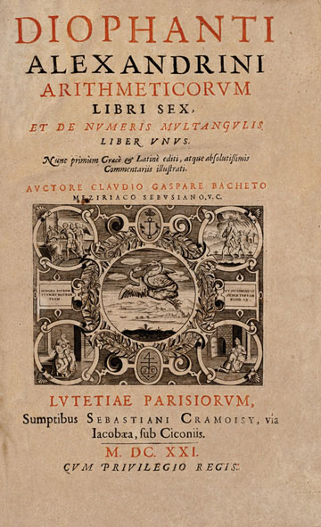

c. 210–290
Greek, Alexandria
Number theory, algebra
Almost nothing is known about the life of Diophantus of Alexandria. He probably lived in the 3rd century AD, and the only biographical clue is a puzzle-epitaph in the Greek Anthology that, when solved as an equation, gives his age at death as 84. Even this may be apocryphal.
What survives is his Arithmetica, originally thirteen books of which ten are extant (six in Greek, four in a medieval Arabic translation). The Arithmetica is a collection of about 130 problems asking for rational or integer solutions to polynomial equations — the kind of problem we now call "Diophantine" in his honour. Unlike the systematic theorem-proof style of Euclid, Diophantus works problem by problem, finding clever ad hoc substitutions for each one.
His influence on modern mathematics is enormous, though indirect. When Fermat read a 1621 Latin translation of the Arithmetica, he filled its margins with notes that launched modern number theory. The most famous margin note — "I have discovered a truly marvellous proof of this, which this margin is too narrow to contain" — was written beside a problem about expressing squares as sums of two squares, and it took 358 years and the full machinery of 20th-century algebraic geometry to settle.
| Phase | Page | Referenced for |
|---|---|---|
| Phase 1 | Diophantine Equations | Studied equations where only integer solutions matter |
| Phase 1 | Diophantine Equations | Authored the Arithmetica, founding text of number theory |